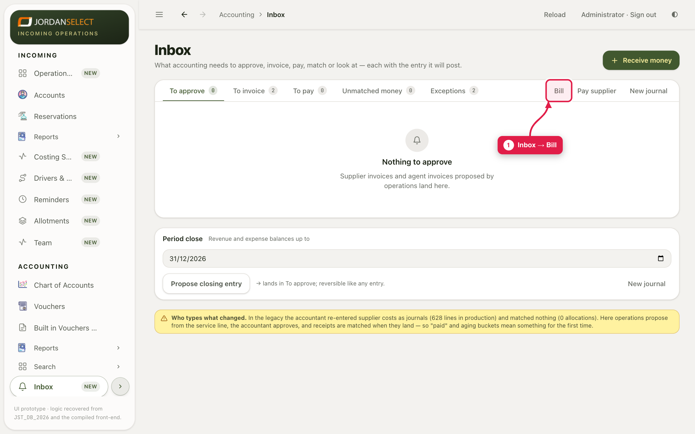
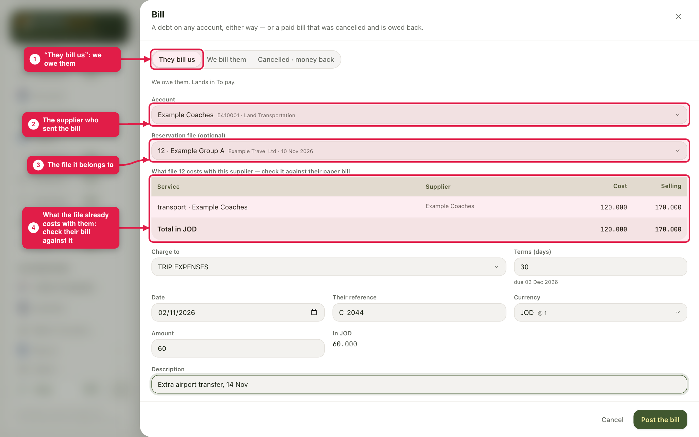
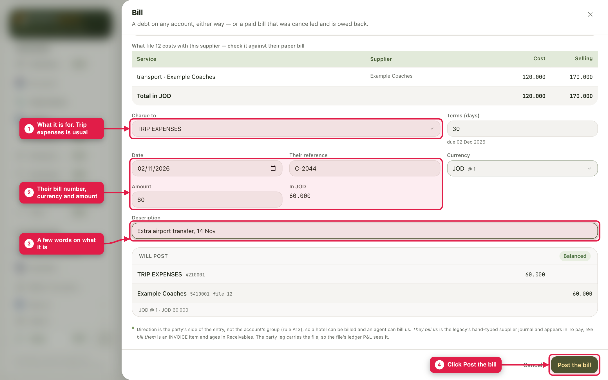
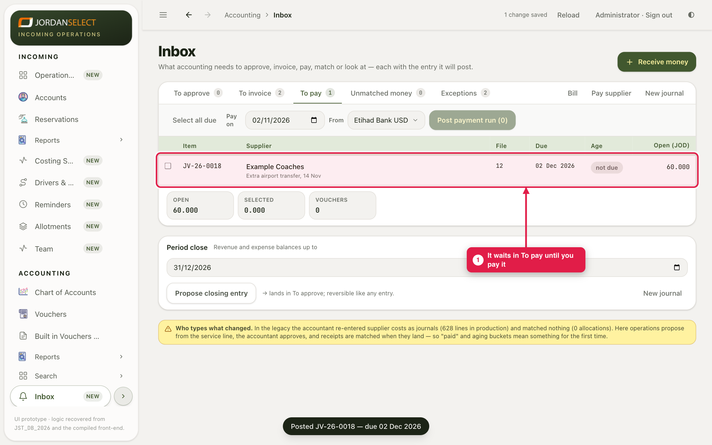

A supplier sends a bill that is not on the file, such as an extra transfer. Book it so it waits to be paid.
Example in this guide: Example Coaches bills 60.000 JOD for an extra airport transfer on file 12, bill number C-2044.
| Choose | When |
|---|---|
| They bill us | Someone sends us a bill. We owe them. It waits in To pay. |
| We bill them | We charge someone. They owe us. Receive money matches to it (guides 03 and 04). |
| Cancelled · money back | A bill that was already paid is cancelled and the money is owed back. |



